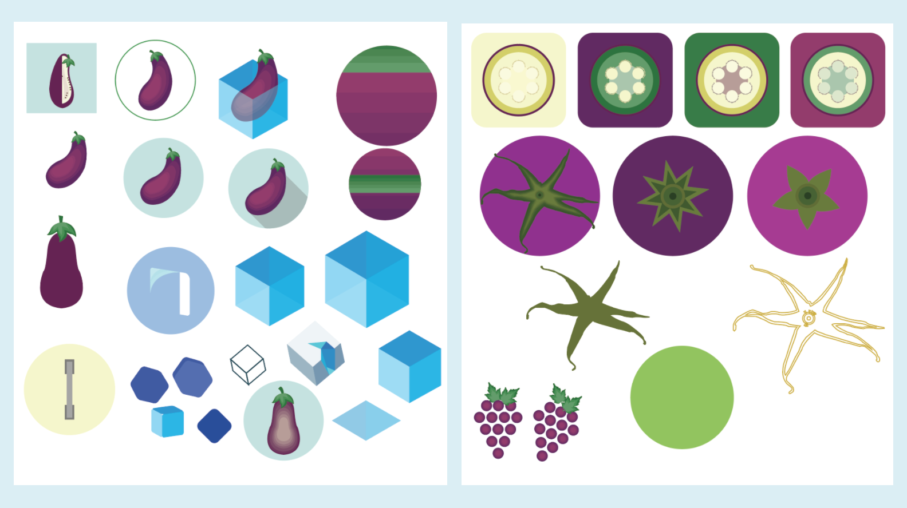
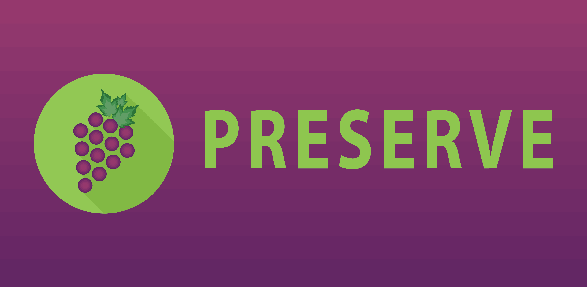
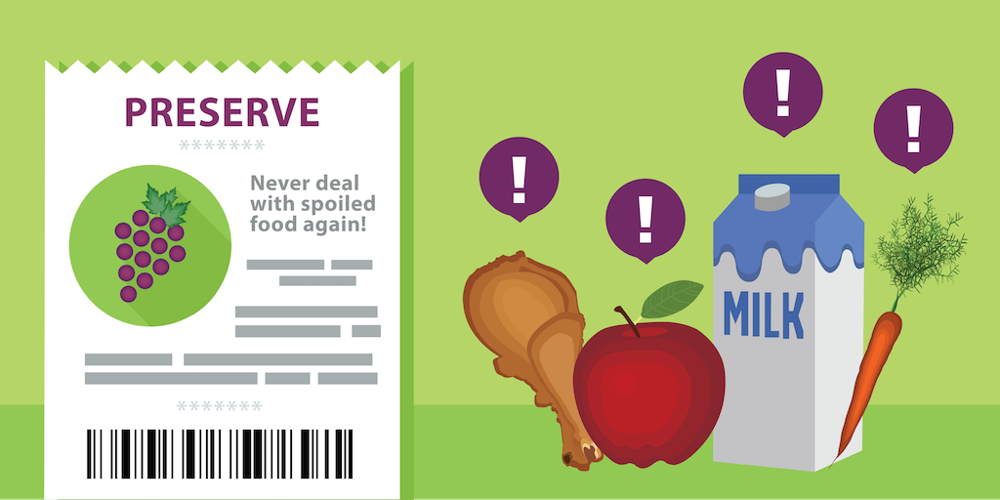

Preserve is a mobile application that allows users to keep track of when their foods will expire. We make handling expiration dates faster and easier with OCR technology that scans receipts and by providing timely notifications. My role in this project was to create the UI/UX designs and implement them using Android Studio.
Three problems associated with food waste is that it is time intensive, wasteful, and easy to forget. There is no quick way to take stock of food purchases or to keep track of when an item was expires. As a result, resources, including time and money as well as water and packing, are wasted when food is thrown away.
Current apps on the App store and Playstore have bad UI, are not specific to food expiration and require a manual add for each item. This inhibits user use as one has to individually add the name and expiration date for each food.
My goal was to come up with a solution that would help promote sustainability by eliminating food waste through a user friendly app.
My solution to this problem was to create an app that allowed a person to scan their receipts after going grocery shopping. This would add the foods purchased to a personal database where users could add expiration dates. Near the expiration date, users receive alert notifications telling them that a certain product will expire in the hope that they use the item before that date.
In order to be more user friendly than our competitors, our Preserve team decided to make the app scan receipts and use smart predictions. This means that not only would the user not have to type in the names of items, but also the expiration dates for repeated items would be automatically added based on prior entries. This, combined with a simple and intuitive design would make our app more popular than others.
The first step in making our app was to determine what features we wanted to include and how they would be organized within the app. My team decided that we would have different storing areas such as the fridge and the pantry to keep track of where each item is stored. To easily manage user information, we used Firebase so we needed a login and sign up screen. Next, we would need some sort of button to take us from the main screen, the fridge, to the camera to scan receipts. I incorporated an intermediate screen to edit names and dates after scanning. Below is a wireframe/lowfi design of our app as well as our first hifi design.
Our final design, show below, is an iteration of our first design. One of the key issues that we had to handle was to figure out whether the add button would bring the user to an individual add or the receipt scan. We decided on having the add button go to the receipt scan, and being to able to individually add a food on the editable page. Secondly, we eliminated the various places a food could be placed and instead had one main list. We incorporated editing directly from the main screen with a pop up, as well as a widget to more easily view each food item without having to open up the app. We also got rid of the shopping list because it was out of scope for this project.
After creating the designs and finishing the app, our team had to decide on a logo. I was charged with logo design so I came up with some ideas ranging from a fridge handle, ice cubes and various fruits and vegetables. Overall, our team liked the color combination purple and green so we picked a food that went with that scheme. While originally, I had played around with using an eggplant; ultimately, we decided on grapes because of the color and vibrancy. It was more appropriate. The main decision was choosing between symmetrical or asymmetrical grapes. Finally, with the desired object made, I created the logo using Material Design specifications such as having a shadow in the back and clean colors.
The next step was to think about marketing and the banner that we would use to display our app at the Mobile Developers of Berkeley (MDB) app fair as well as on the Play Store. We started off with a simple banner shown below.
However, I knew that I wanted to elevate our design to further illustrate what our app does and add more dimension. Therefore, I redesigned the banner to include perishable foods with exclamation marks as a nod towards our use of notifications as well as a receipt because of our OCR receipt scanning.
After this first round of design, our app needed a redesign. My goal was to make the app look more simple and sleek, in terms with Google's Material Design specifications. Also, based on the features of our app, the user experience could be simplified to better highlight our main features. I experimented with different login and sign up screens as well as main screens because this is where the user first interacts with the app. It was important especially for the fridge to keep it simple in solely displaying the name and expiration date of the item. Overall, the app gained a cleaner aesthetic that made it clearer to use.
Overall, this project was a great way for me to incorporate all aspects of what I enjoy: conservation, computer science and design. By creating an app that helps to reduce food waste, I really found a way to combine my interests. I was a part of every stage of the process from ideation, design, development, and redesign. I definitely learned a lot by working with a team and making compromises when discussing certain features or design initiatives. Additionally, as part of this team, we learned how to play to each other's strengths. Specifically for me, I spearheaded all design aspects of the app. The most important thing was figuring out part of the design process: iterating multiple times and truly figuring out how your users use the app to create a better experience for them.